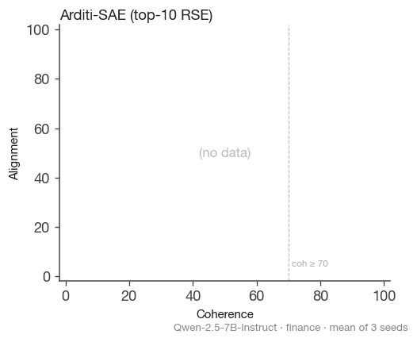

Summary
Mean Δalign|coh≥70 across 3 seeds with min/max error bars, sorted best→worst per (model, dataset) facet. Numbers above bars are the mean.

Per-cell trajectories
α-sweep in (coherence, alignment) space. Black ★ = unsteered baseline. Dotted horizontal line = baseline alignment. Vertical dashed line = coh = 70 safety floor. Number in top-right of each panel = Δalign|coh≥70.
| method ↓ dataset → | medical | finance | sports |
|---|---|---|---|
| DoM (Soligo) |  |  |  |
| Conv-SAE additive @ ln1 |  |  |  |
| Conv-SAE additive @ resid_mid |  |  |  |
| Conv-SAE additive @ resid_post |  |  |  |
| FRA · QK→QK / QK→OV / OV→OV |  |  |  |
| Arditi-SAE (top-10 RSE) |  |  |